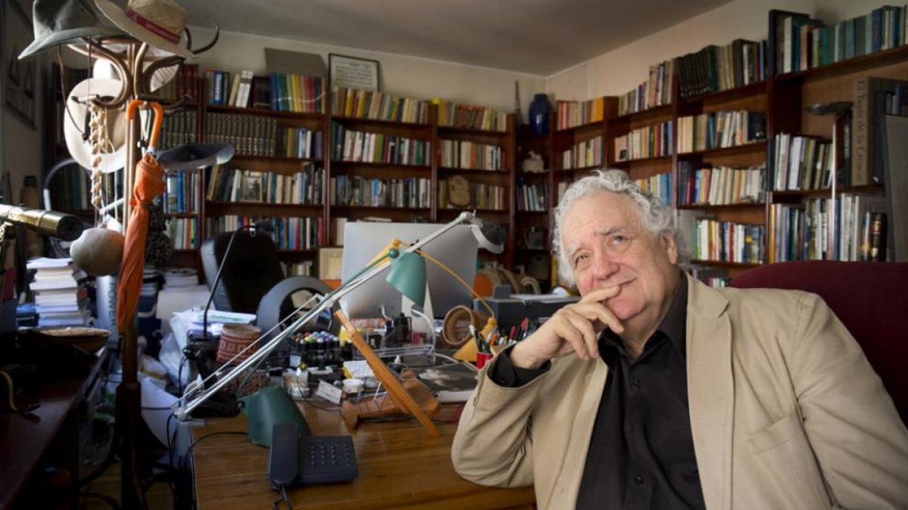

Death in Aphorisms by the "Einstein of Spain"
A translation of Jorge Wagensberg's final published essay — fifteen aphorisms on death and the probability of being born.

On January 30, 2017, Jorge Wagensberg published his article "La Muerte en Aforismos" — "Death in Aphorisms" — in El Pais, the same newspaper that, just one year later, called Jorge the "Einstein of Spain" in an obituary celebrating his life. Jorge was my cousin and part of the generation of our family that survived the holocaust through the foresight of his father's brother who moved to Barcelona shortly prior to Jorge's birth in 1948. Jorge was always the talk of the family, and I had the opportunity to meet Jorge and sit with him for dinner just once in my life when I was living in Spain. As a tribute, I translated this article in his memory.
Death in aphorisms
Humans are the first organisms to interrogate themselves. We become based on this self-reflection. At the beginning of our lives we dream up a future, and slowly we form based on our ability to learn from our past. Those two pieces often don't transpire as elegantly as we wish. As we age, the past becomes longer and our introspection more profound. We judge each other based on this ability explicitly, even unconsciously. In all this thinking about life, however, drums up just as much perplexity as thinking about death. Here are my thoughts:
- The most common phrase found on gravestones, "We will never forget you," implies a bold hypothesis that only others die.
- Suicide is a perfect crime, as the perpetrator is instantaneously brought to justice.
- So distracted are we by the idea that we can never find consolation against the certainty that one day we will die, that we hardly consider the infinitesimal probability that we were born.
- The probability of being reborn after death is colossally small, but not none, as illustrated by the fact that we were born a first time.
- All of life is simply a mechanism to preserve an array of DNA.
- Not by direct consequence, but all of death is a product of sexual reproduction.
- Where will I be after I die? Well, by symmetry, probably in a place similar to where I was before I was born.
- One has died completely when the last person who knew him dies.
- If in the future medicine can cure any disease, you would never dare cross the street, because it is one thing to lose your life and quite another to lose all of eternity.
- You can be enthusiastic about gaining eternal life until you think about the idea that one day you may get bored and remember that in eternity no one dies.
- When you die, something changes retrospectively in the look of all the photographs taken of you throughout your life.
- Everything real is thinkable, but not everything thinkable must be real.
- Therefore, all of thought and its boundless imagination is larger than our entire reality.
- We have so little time in this world and such wonderful lives to be lived, and what a pity, because there are many ways to be alive and only one to be dead.
- Epitaph: not being able to read this epitaph after I am deceased.
Sources. Original El Pais article (Jan 30, 2017) and obituary (Mar 3, 2018). Translated from the Castilian by Joseph Z. Sokol in memory of his cousin Jorge.